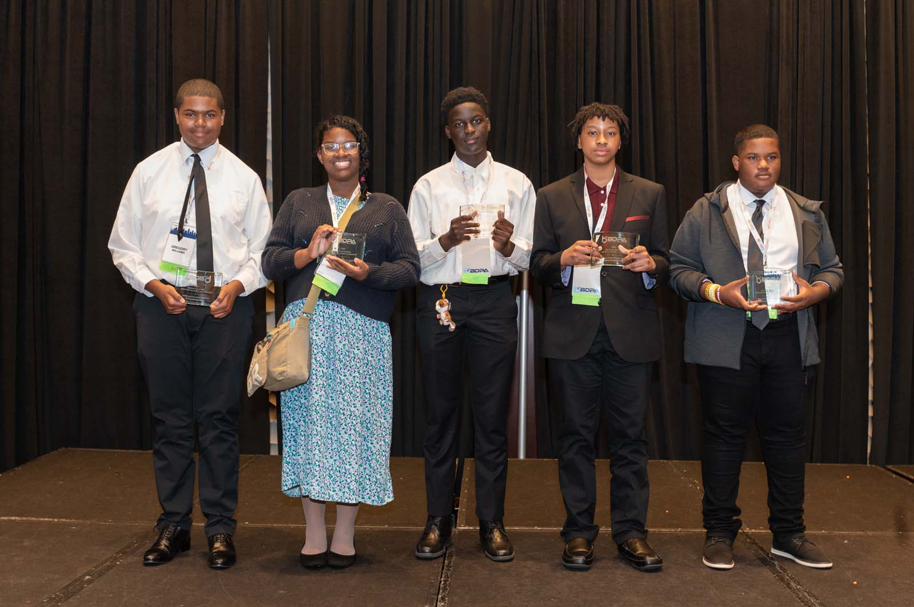

My name is Anna Elizabeth Martinez-Graham (and, yes, I have two first names!) I am fourteen years old, my birthday is the 16 of April (so I'm an Aries), and I am Afro-Latina (Mexican) from the District of Columbia. I recently graduated middle school and I look forward to attending my high school, School Without Walls High School, in the fall. Here's another thing you may not know about me. I have ASD, or autism spectrum disorder, and so I have a different mindset than others, not to mention that I was bullied for being an intelligent student. But BDPA is a bit of a safe space for me because I'm able to learn new things about this field of work.
But other than that, I'm glad that I survived 14 years on Earth and could make some time here for BDPA. This place has its benefits... and flaws...
So I have a list of character traits, both positive and negative. Some that resemble my parents or zodiac... Anyways, here they are.
I'm a procrastinator and sometimes I'll clear my mind as if I don't have any work to do. But I mostly enjoy drawing, watching YouTube and listening to music (like K-pop!) Sometimes, I'd play video games or knit and I'm thinking about trying to crochet. The one thing I know is that I'm animated, so I will talk to myself and make little motions A LOT. Also, I air draw with my finger to try to come up with an idea for art.
If there's one thing I enjoy, it's family time. Mainly with my father's because I grew up around them mostly. That even goes for birthdays, Christmas, New Year's, and Epiphany. The best part is that I get to spend time with my younger cousins, especially Vania, who turned one more than a month ago.
Now that I think about it, BDPA is more like a job but our team recieves a cash scholarship when we place something. So even though this may seem like free time because it's every Saturday, it's not.
Well, this organization has its strong suits and fix-ups as I mentioned earlier. I pray that the rest of the text below will assist in presenting my opinions.
The teachers are a great help with the students and they consider me to be a leader. Of course, this should imply two instructors, Miss TurKenya Herring (nicknamed Kenya) and Miss Terry Brox. My mother and Miss Terry were colleagues, and when she found out I was teaching myself how to code, she reccomended that I join this class. I've known her long enough, so I'm comfortable with that. As for Miss Kenya, she was the youngest female captain in her team when she was around my age. And in 2022, when I was the team captain, I took the throne for that role. (Sorry!)
During my time here, I enjoyed learning about functions and variables, conversions of decimals, binary, and hexes, Bootstrap and CSS, GitHub and/or Git CMD, and security measures.
I have one, small, tiny, teensy-weensy, issue with this organization in general... (This is something that mainly Miss Kenya, Miss Terry, and my friend Hasanat will understand.)
IT'S MOSTLY BOYS
Sorry, I sounded like I was yelling, but it's true! There aren't many female students in my class and I'm certain that's the case with some of the other chapters. How do I know? In last year's coding competition, I noticed some chapters were all boys. (There was only one other chapter I knew of that had ONE girl.) We need more females and people of other gender to represent in this industry as Miss Kenya said once during the Samsung event last year in 2022. The only ones in our whole class are me and Hasanat Shakir, who also is my friend.
But either way, I enjoyed myself at the competition last year. Despite the fact that we won third, we all received a cash scholarship of (I'm assuming) $1,000. See how happy we look?
Okay, I have said a lot... and maybe too much. But I hope you enjoyed looking at---or skimming through---my webpage. I don't mean to sound insulting but to share my opinion and how this can make improvements. But what about you? Can you try to make a difference?